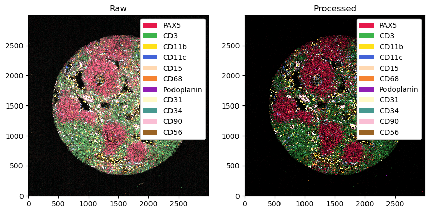
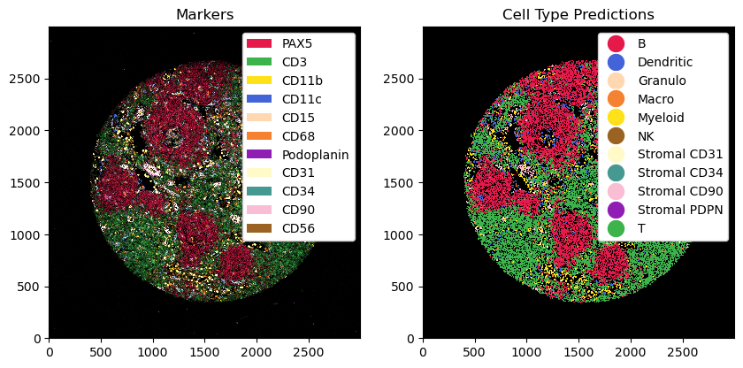
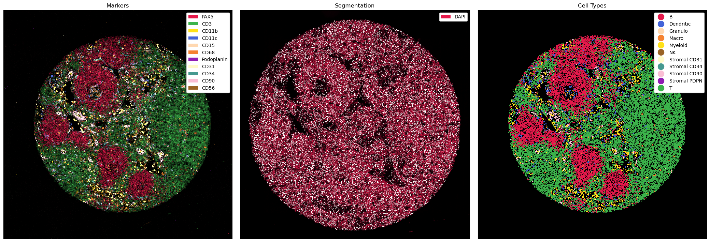
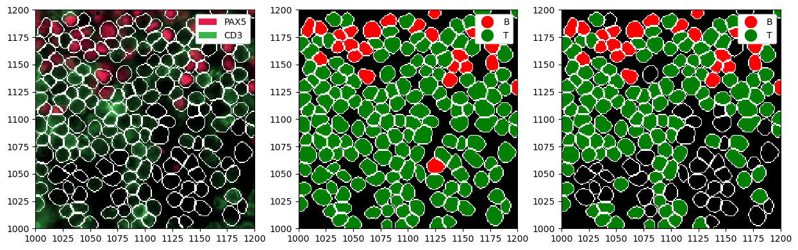
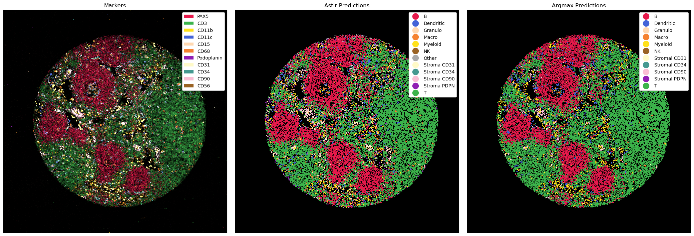
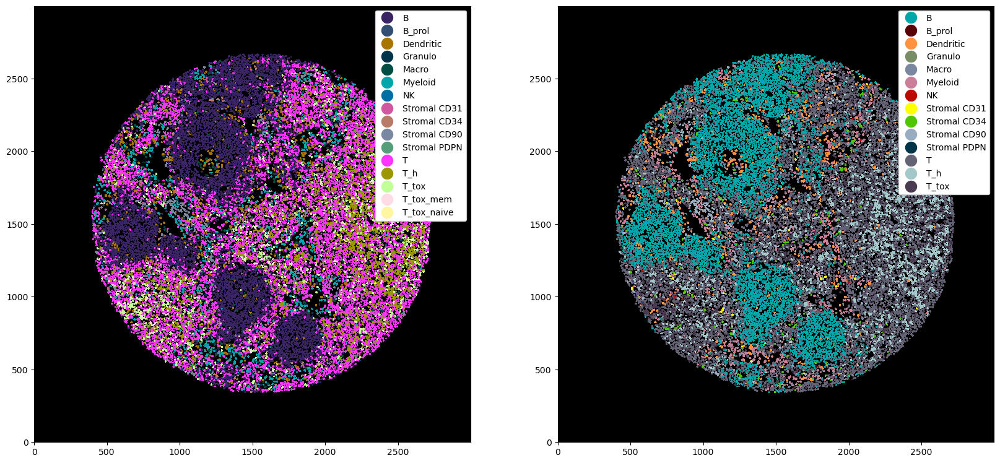
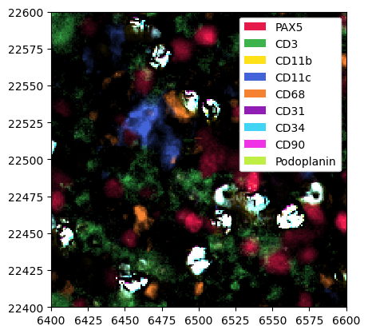
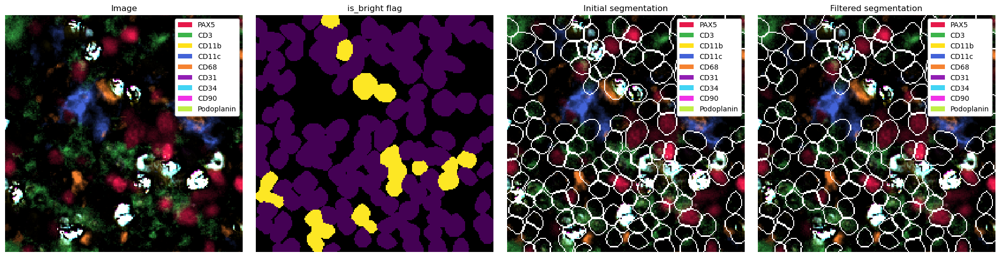

Cell Type Prediction#
The goal of cell type prediction is to assign a label to each cell. While methods such as clustering are frequently used in single cell transcriptomics data, these methods do not necessarily translate well to highly multiplexed fluorescence images. Instead, this notebook follows a two-step approach. In the first step, major cell types (such as B cells, T cells, macrophages, etc.) are predicted by using a set of mutually exclusive markers. These initial labels are predicted with methods such as
argmax or astir and build the foundation for step two, in which we will look at functional markers. Here, we use a binarization-like approach. This means that for our functional markers, each cell gets either a value of 1 (if the cell expresses that marker) or 0 (if the cell does not express that marker). While this is a simplification of the underlying biology, this abstraction can be useful to counteract the often poor signal-to-noise ratio inherent in the data.
If you want to follow along with this tutorial, you can download the data here.
[1]:
%reload_ext autoreload
%autoreload 2
[2]:
import spatialproteomics as sp
import pandas as pd
import matplotlib.pyplot as plt
import xarray as xr
from scipy.signal import medfilt2d
[3]:
ds = xr.open_zarr("../../data/LN_24_1_unprocessed.zarr")
Image Processing#
Before predicting cell types, it is typically helpful to perform some preprocessing on the images. Here, we simply perform some custom thresholding on the markers to clean up the images and boost the signal-to-noise ratio.
[4]:
# preprocessing: thresholding by percentiles and applying a median filter
channels = [
"PAX5",
"CD3",
"CD11b",
"CD11c",
"CD15",
"CD68",
"Podoplanin",
"CD31",
"CD34",
"CD90",
"CD56",
"CD4",
"CD8",
"Ki-67",
"CD45RA",
"CD45RO",
]
quantiles = [0.8, 0.5, 0.8, 0.8, 0.8, 0.8, 0.95, 0.95, 0.95, 0.95, 0.8, 0.95, 0.95, 0.95, 0.95, 0.95]
colors = [
"#e6194B",
"#3cb44b",
"#ffe119",
"#4363d8",
"#ffd8b1",
"#f58231",
"#911eb4",
"#fffac8",
"#469990",
"#fabed4",
"#9A6324",
]
channels_celltypes = channels[:-5]
# processing and recomputing quantification
ds_processed = (
ds.pp[channels].pp.threshold(quantiles).pp.add_quantification().pp.transform_expression_matrix(method="arcsinh")
)
[5]:
# plotting the ds and ds processed next to one another
fig, ax = plt.subplots(1, 2, figsize=(10, 5))
_ = ds.pp[channels_celltypes].pl.colorize(colors).pl.show(ax=ax[0])
_ = ds_processed.pp[channels_celltypes].pl.colorize(colors).pl.show(ax=ax[1])
ax[0].set_title("Raw")
ax[1].set_title("Processed")
plt.show()

Cell Type Prediction with Argmax#
Given the thresholded image, the simplest way to derive cell type labels is to define associations between cell types and markers, and then assign the cell type whose marker is most highly expressed (i. e. taking the argmax). This technique, also termed argmax, is demonstrated below.
[6]:
marker_ct_dict = {
"PAX5": "B",
"CD3": "T",
"CD11b": "Myeloid",
"CD11c": "Dendritic",
"CD15": "Granulo",
"CD68": "Macro",
"Podoplanin": "Stromal PDPN",
"CD31": "Stromal CD31",
"CD34": "Stromal CD34",
"CD90": "Stromal CD90",
"CD56": "NK",
}
[7]:
# predicting the cell type using the argmax
ds_with_ct_predictions = ds_processed.la.predict_cell_types_argmax(
marker_ct_dict, key="_intensity", overwrite_existing_labels=True
)
# adding colors to match the markers
ds_with_ct_predictions = ds_with_ct_predictions.la.set_label_colors(list(marker_ct_dict.values()), colors)
[8]:
# plotting the ct predictions next to the processed image
fig, ax = plt.subplots(1, 2, figsize=(10, 5))
_ = ds_with_ct_predictions.pp[channels_celltypes].pl.colorize(colors).pl.show(ax=ax[0])
_ = ds_with_ct_predictions.pl.show(render_image=False, render_labels=True, ax=ax[1])
ax[0].set_title("Markers")
ax[1].set_title("Cell Type Predictions")
[8]:
Text(0.5, 1.0, 'Cell Type Predictions')

[9]:
fig, ax = plt.subplots(1, 3, figsize=(21, 7))
_ = ds_processed.pp[channels_celltypes].pl.colorize(colors).pl.autocrop(padding=100).pl.show(ax=ax[0])
_ = ds.pp["DAPI"].pl.autocrop(padding=100).pl.show(render_segmentation=True, ax=ax[1])
_ = ds_with_ct_predictions.pl.autocrop(padding=100).pl.show(render_image=False, render_labels=True, ax=ax[2])
# removing the x and y ticks
ax[0].set_xticks([])
ax[0].set_yticks([])
ax[1].set_xticks([])
ax[1].set_yticks([])
ax[2].set_xticks([])
ax[2].set_yticks([])
# setting titles
ax[0].set_title("Markers")
ax[1].set_title("Segmentation")
ax[2].set_title("Cell Types")
plt.tight_layout()

Getting observations from the xarray object is very easy. We can simply use the method pp.get_layer_as_df(), which can also parse our cell types into human-readable format automatically.
[10]:
# getting the obs with get_layer_as_df() to get human readable cell type annotations in a pandas data frame
ds_with_ct_predictions.pp.get_layer_as_df("_obs", celltypes_to_str=True)
[10]:
| _labels | centroid-0 | centroid-1 | |
|---|---|---|---|
| 1 | Stromal CD34 | 343.043825 | 1492.916335 |
| 2 | B | 341.740506 | 1517.082278 |
| 3 | B | 342.250000 | 1450.492857 |
| 4 | B | 345.150602 | 1559.259036 |
| 5 | T | 346.454128 | 1575.885321 |
| ... | ... | ... | ... |
| 18130 | B | 2662.788136 | 1437.889831 |
| 18131 | B | 2662.327160 | 1570.314815 |
| 18132 | B | 2663.756757 | 1628.040541 |
| 18133 | B | 2662.770833 | 1656.781250 |
| 18134 | B | 2665.926829 | 1535.097561 |
18134 rows × 3 columns
Depending on which markers you have chosen, it could happen that some cells have no or very low expression for those markers. In such cases, it can be desirable to set cells with no expression to be “Unlabeled”. You can control this using the min_intensity argument in la.predict_cell_types_argmax(). By default this is set to 0, and increasing it will lead to less cells being labeled. The example below illustrates this.
[11]:
# let's just consider two markers
# not all cells in this excerpt are B or T cells, hence they will express neither of the two markers
ds_tmp = ds_processed.pp[["PAX5", "CD3"], 1000:1200, 1000:1200]
# just predicting the maximum
ds_all = ds_tmp.la.predict_cell_types_argmax({"PAX5": "B", "CD3": "T"}).la.set_label_colors(
["B", "T"], ["red", "green"]
)
# cells where neither marker is above min_intensity are not labeled
ds_with_unlabeled = ds_tmp.la.predict_cell_types_argmax(
{"PAX5": "B", "CD3": "T"}, min_intensity=1.5
).la.set_label_colors(["B", "T"], ["red", "green"])
fig, ax = plt.subplots(1, 3, figsize=(15, 5))
_ = ds_tmp.pl.show(render_segmentation=True, ax=ax[0])
_ = ds_all.pl.show(render_image=False, render_segmentation=True, render_labels=True, ax=ax[1])
_ = ds_with_unlabeled.pl.show(render_image=False, render_segmentation=True, render_labels=True, ax=ax[2])

Cell Type Prediction with Astir#
There also exist more involved methods of predicting cell types, such as astir. Here is a quick example on how one could apply astir to the previous image.
[12]:
ds_processed
[12]:
<xarray.Dataset> Size: 219MB
Dimensions: (cells: 18134, features: 2, channels: 16, x: 3000, y: 3000)
Coordinates:
* cells (cells) int64 145kB 1 2 3 4 5 ... 18131 18132 18133 18134
* channels (channels) <U11 704B 'PAX5' 'CD3' ... 'CD45RA' 'CD45RO'
* features (features) <U10 80B 'centroid-0' 'centroid-1'
* x (x) int64 24kB 0 1 2 3 4 5 ... 2994 2995 2996 2997 2998 2999
* y (y) int64 24kB 0 1 2 3 4 5 ... 2994 2995 2996 2997 2998 2999
Data variables:
_obs (cells, features) float64 290kB dask.array<chunksize=(9067, 2), meta=np.ndarray>
_segmentation (y, x) int64 72MB 0 0 0 0 0 0 0 0 0 0 ... 0 0 0 0 0 0 0 0 0 0
_image (channels, y, x) uint8 144MB 0 0 0 0 0 0 0 ... 0 0 0 0 0 0 0
_intensity (cells, channels) float64 2MB 0.0007968 0.1034 ... 0.0[13]:
# minor reformatting
seg = ds_processed["_segmentation"].values
ds_for_astir = ds_processed.pp.drop_layers("_obs").pp.add_segmentation(seg)
[14]:
ds_for_astir
[14]:
<xarray.Dataset> Size: 219MB
Dimensions: (channels: 16, x: 3000, y: 3000, cells: 18134, features: 2)
Coordinates:
* channels (channels) <U11 704B 'PAX5' 'CD3' ... 'CD45RA' 'CD45RO'
* x (x) int64 24kB 0 1 2 3 4 5 ... 2994 2995 2996 2997 2998 2999
* y (y) int64 24kB 0 1 2 3 4 5 ... 2994 2995 2996 2997 2998 2999
* cells (cells) int64 145kB 1 2 3 4 5 ... 18131 18132 18133 18134
* features (features) <U10 80B 'centroid-0' 'centroid-1'
Data variables:
_image (channels, y, x) uint8 144MB 0 0 0 0 0 0 0 ... 0 0 0 0 0 0 0
_intensity (cells, channels) float64 2MB 0.0007968 0.1034 ... 0.0
_segmentation (y, x) int64 72MB 0 0 0 0 0 0 0 0 0 0 ... 0 0 0 0 0 0 0 0 0 0
_obs (cells, features) float64 290kB 343.0 1.493e+03 ... 1.535e+03[15]:
# using astir to predict cell types
# note the slightly different structure of the marker dictionary
ct_marker_dict = {
"cell_type": {
"B": ["PAX5"],
"T": ["CD3"],
"Myeloid": ["CD11b"],
"Dendritic": ["CD11c"],
"Granulo": ["CD15"],
"Macro": ["CD68"],
"Stroma PDPN": ["Podoplanin"],
"Stroma CD31": ["CD31"],
"Stroma CD34": ["CD34"],
"Stroma CD90": ["CD90"],
"NK": ["CD56"],
}
}
ds_with_ct_predictions_astir = ds_for_astir.tl.astir(ct_marker_dict)
training restart 1/5: 100%|██████████| 5/5 [ 4.66s/epochs, current loss: -33065.2]
training restart 2/5: 100%|██████████| 5/5 [ 4.98s/epochs, current loss: -34636.7]
training restart 3/5: 100%|██████████| 5/5 [ 5.10s/epochs, current loss: -32790.0]
training restart 4/5: 100%|██████████| 5/5 [ 5.16s/epochs, current loss: -33707.0]
training restart 5/5: 100%|██████████| 5/5 [ 4.82s/epochs, current loss: -32585.0]
training restart (final): 8%|▊ | 41/500 [ 4.91s/epochs, current loss: -98053.1]
[16]:
# adding custom colors and adding observations back in
cell_types = [
"B",
"T",
"Myeloid",
"Dendritic",
"Granulo",
"Macro",
"Stroma PDPN",
"Stroma CD31",
"Stroma CD34",
"Stroma CD90",
"NK",
"Other",
]
ds_with_ct_predictions_astir = ds_with_ct_predictions_astir.la.set_label_colors(
cell_types, colors + ["darkgray"]
).pp.add_observations()
[17]:
ds_with_ct_predictions_astir
[17]:
<xarray.Dataset> Size: 219MB
Dimensions: (labels: 12, la_props: 2, channels: 16, x: 3000, y: 3000,
cells: 18134, features: 3)
Coordinates:
* labels (labels) int64 96B 1 2 3 4 5 6 7 8 9 10 11 12
* la_props (la_props) <U6 48B '_color' '_name'
* channels (channels) <U11 704B 'PAX5' 'CD3' ... 'CD45RA' 'CD45RO'
* x (x) int64 24kB 0 1 2 3 4 5 ... 2994 2995 2996 2997 2998 2999
* y (y) int64 24kB 0 1 2 3 4 5 ... 2994 2995 2996 2997 2998 2999
* cells (cells) int64 145kB 1 2 3 4 5 ... 18131 18132 18133 18134
* features (features) <U10 120B '_labels' 'centroid-0' 'centroid-1'
Data variables:
_image (channels, y, x) uint8 144MB 0 0 0 0 0 0 0 ... 0 0 0 0 0 0 0
_intensity (cells, channels) float64 2MB 0.0007968 0.1034 ... 0.0
_segmentation (y, x) int64 72MB 0 0 0 0 0 0 0 0 0 0 ... 0 0 0 0 0 0 0 0 0
_obs (cells, features) float64 435kB 5.0 343.0 ... 1.535e+03
_la_properties (labels, la_props) object 192B '#e6194B' 'B' ... 'T'[18]:
# plotting the astir and the argmax predictions
fig, ax = plt.subplots(1, 3, figsize=(21, 7))
_ = ds_processed.pp[channels_celltypes].pl.colorize(colors).pl.autocrop(padding=100).pl.show(ax=ax[0])
_ = ds_with_ct_predictions_astir.pl.autocrop(padding=100).pl.show(render_image=False, render_labels=True, ax=ax[1])
_ = ds_with_ct_predictions.pl.autocrop(padding=100).pl.show(render_image=False, render_labels=True, ax=ax[2])
# removing the x and y ticks
ax[0].set_xticks([])
ax[0].set_yticks([])
ax[1].set_xticks([])
ax[1].set_yticks([])
ax[2].set_xticks([])
ax[2].set_yticks([])
# setting titles
ax[0].set_title("Markers")
ax[1].set_title("Astir Predictions")
ax[2].set_title("Argmax Predictions")
plt.tight_layout()

Marker Binarization#
For some (functional) markers, we want to binarize them (“Is this cell positive or negative for that marker?”). This is performed in several steps:
First, the image needs to be thresholded. We already did this at the beginning of the notebook using the
pp.threshold()method.Afterwards, we need to once again quantify the expression for each cell. While we have already seen how to do this using the mean expression, we can also use things such as the percentage of positive pixels (after thresholding).
Next, we actually perform the binarization using
la.threshold_labels(). This way, we could for example consider a cell positive for CD4 only if more than 90% of its pixels have a non-zero intensity value.Finally, we create a hierarchy of cell subtypes, which is based on the labels we computed previously and subsets them further by using the binarized functional markers.
[19]:
# adding a new quantification: the percentage of positive pixels (this requires appropriate thresholding, as we have performed ealier)
ds_with_ct_predictions = ds_with_ct_predictions.pp.add_quantification(
func=sp.percentage_positive, key_added="_percentage_positive"
)
[20]:
# these thresholds are the percentages of positive cells required
# so a cell with more than 50% of non-zero CD4 pixels would be considered CD4 positive
threshold_dict = {"CD4": 0.5, "CD8": 0.5, "Ki-67": 0.5, "CD45RA": 0.5, "CD45RO": 0.5}
ds_with_binarization = ds_with_ct_predictions.la.threshold_labels(threshold_dict, layer_key="_percentage_positive")
[21]:
# under the hood, we can see that our new object now contains binarization columns in the _obs field
ds_with_binarization.pp.get_layer_as_df().head()
[21]:
| CD45RA_binarized | CD45RO_binarized | CD4_binarized | CD8_binarized | Ki-67_binarized | _labels | centroid-0 | centroid-1 | |
|---|---|---|---|---|---|---|---|---|
| 1 | 0.0 | 0.0 | 0.0 | 0.0 | 0.0 | Stromal CD34 | 343.043825 | 1492.916335 |
| 2 | 0.0 | 0.0 | 0.0 | 0.0 | 0.0 | B | 341.740506 | 1517.082278 |
| 3 | 0.0 | 0.0 | 0.0 | 0.0 | 0.0 | B | 342.250000 | 1450.492857 |
| 4 | 0.0 | 0.0 | 0.0 | 0.0 | 0.0 | B | 345.150602 | 1559.259036 |
| 5 | 0.0 | 0.0 | 0.0 | 0.0 | 0.0 | T | 346.454128 | 1575.885321 |
Cell Subtype Prediction#
Finally, it is time to combine the broad cell type predictions with the binarization results in order to predict more fine-grained cell types. Here, we use a dictionary to define a cell type hierarchy, and then use the method la.predict_cell_subtypes() to subset our cell types accordingly. Instead of a dictionary, you can also provide the path to a yaml file. This file could look something like this:
B:
subtypes:
- name: B_prol
markers: ["Ki67+"]
T:
subtypes:
- name: T_h
markers: ["CD4+"]
- name: T_tox
markers: ["CD8+"]
subtypes:
- name: T_tox_naive
markers: ["CD45RA+"]
- name: T_tox_mem
markers: ["CD45RO+"]
Note that after each marker, we add a + after its name if we want cells of this cell type to be positive for a marker, or a - if we require it to be negative for the marker instead.
[22]:
# calling of cell subtypes with a provided hierarchy
subtype_dict = {
"B": {"subtypes": [{"name": "B_prol", "markers": ["Ki-67+"]}]},
"T": {
"subtypes": [
{"name": "T_h", "markers": ["CD4+"]},
{
"name": "T_tox",
"markers": ["CD8+"],
"subtypes": [
{"name": "T_tox_naive", "markers": ["CD45RA+"]},
{"name": "T_tox_mem", "markers": ["CD45RO+"]},
],
},
]
},
}
ds_with_subtypes = ds_with_binarization.la.predict_cell_subtypes(subtype_dict)
[23]:
# if you wanted to read the hierarchy from a file, you could do it like this
ds_with_subtypes = ds_with_binarization.la.predict_cell_subtypes("../../data/subtype_hierarchy.yaml")
You can see that this added cell type labels on multiple levels to the _la_layers table, so you can always go back to a lower level. In addition, the most granular cell type labels have been added as the new default labels in _obs.
[37]:
ds_with_subtypes.pp.get_layer_as_df("_la_layers").iloc[400:410]
[37]:
| labels_0 | labels_1 | labels_2 | |
|---|---|---|---|
| 401 | B | B | B |
| 402 | T | T_h | T_h |
| 403 | T | T | T |
| 404 | T | T_tox | T_tox_naive |
| 405 | T | T | T |
| 406 | Stromal CD90 | Stromal CD90 | Stromal CD90 |
| 407 | T | T | T |
| 408 | B | B | B |
| 409 | T | T | T |
| 410 | T | T | T |
[25]:
# plotting the cell type predictions
plt.figure(figsize=(10, 10))
_ = ds_with_subtypes.pl.autocrop().pl.show(render_image=False, render_labels=True)

[26]:
# plotting the cell type predictions
plt.figure(figsize=(10, 10))
_ = (
ds_with_subtypes.la[["T", "T_h", "T_tox", "T_tox_mem", "T_tox_naive"]]
.la.set_label_colors(
["T", "T_h", "T_tox", "T_tox_mem", "T_tox_naive"],
colors=["gray", "orange", "deepskyblue", "darkblue", "darkviolet"],
)
.pl.autocrop()
.pl.show(render_image=False, render_labels=True)
)

As a last step, let’s say you want to go back to a lower level. You can do this using the la.set_label_level() method as shown below.
[27]:
fig, ax = plt.subplots(1, 2, figsize=(20, 10))
# showing the fine-grained labels, which are the defaults
_ = ds_with_subtypes.pl.autocrop().pl.show(render_image=False, render_labels=True, ax=ax[0])
# going back a level (so that T_tox cells are not split into memory and naive)
_ = (
ds_with_subtypes.la.set_label_level("labels_1")
.pl.autocrop()
.pl.show(render_image=False, render_labels=True, ax=ax[1])
)

Advanced Cell Type Gating#
The example above provided an overview on how to use marker positivity to gate different cell types. You can also encode more complex gating schemes with marker negativity, double-positivity, etc. Let’s look at some ways we can encode a more complex cell type hierarchy. Note that these are just for illustrative purposes and do not represent the most biologically sensible gating strategy. Furthermore, they are shown in yaml format for better readability.
Double positivity: You can encode a cell type with double positivity. In the case below, we would only call a cell as naive cytotoxic, if both CD8 and CD45RA are positive.
B:
subtypes:
- name: B_prol
markers: ["Ki-67+"]
T:
subtypes:
- name: T_h
markers: ["CD4+"]
- name: T_tox
markers: ["CD8+", "CD45RA+"]
Alternative markers: Alternatively, you could also define a cell type if either one of a set of markers is positive. Here, cells would be called T_tox if either CD45RO or CD45RA are positive.
B:
subtypes:
- name: B_prol
markers: ["Ki-67+"]
T:
subtypes:
- name: T_tox
markers: ["CD45RA+"]
- name: T_tox
markers: ["CD45RO+"]
Marker negativity: By using a minus sign after a marker, we call a cell if it is negative for that marker. For example, we could define T helper cells as being CD8 negative.
B:
subtypes:
- name: B_prol
markers: ["Ki-67+"]
T:
subtypes:
- name: T_h
markers: ["CD8-"]
- name: T_tox
markers: ["CD8+"]
Combined positivity and negativity: We can also use combinations of positive and negative markers to define certain cell subtypes.
B:
subtypes:
- name: B_prol
markers: ["Ki-67+"]
T:
subtypes:
- name: T_h
markers: ["CD4+", "CD8-"]
- name: T_tox
markers: ["CD8+"]
Removing Cells with Unspecific Binding#
Sometimes, antibodies bind to a cell unspecifically. As a result, this cell shows very bright intensities in almost all channels. This is bad, because we cannot accurately assign cell types to such a cell. One way of dealing with this is to first find all affected cells, and then remove them from the segmentation.
Let’s have a look at a dataset where this is the case.
[28]:
ds = xr.open_zarr("../../data/bright_cells_example.zarr")
# thresholding, just as show in the example workflow or the image processing notebooks
threshold_dict = {
"PAX5": 0.8,
"CD3": 0.7,
"CD11b": 0.8,
"CD11c": 0.9,
"CD68": 0.9,
"CD31": 0.95,
"CD34": 0.95,
"CD90": 0.95,
"Podoplanin": 0.95,
}
channels, thresholds = list(threshold_dict.keys()), list(threshold_dict.values())
ds = ds.pp.threshold(thresholds, channels=channels).pp.add_quantification()
_ = ds.pp[channels].pl.show()

As you can see, some cells show very bright signal, even after thresholding. We can use the method pp.find_bright_cells() to detect such cells. This method takes three important arguments as input:
channels: which proteins you want to consider when identifying bright cells. By default, this uses all channels.quantile: for each channel, a cell is called “bright” if its intensity is above this quantile. By default, this selects the brightest 5% of cells.frac_channels: in what fraction of channels a cell needs to be “bright” to be flagged. By default, if a cell is in the top 5% brightest cells for 50% of markers, it is flagged.
Depending on the quality of your data (e.g., how many of your cells exhibit this phenomenon), you might need to tweak these values accordingly. In the example below, we only look at a couple of channels, and adjust the quantile value to be more sensitive.
[29]:
ds = ds.pp.find_bright_cells(channels=channels, quantile=0.8)
This method introduces a new column called “is_bright” into _obs. We can then simply filter out the bright cells by using pp.filter_by_obs(). Let’s do that and plot the result.
[30]:
# filtering out the bright cells
ds_filtered = ds.pp.filter_by_obs("is_bright", lambda x: x == 0)
# plotting
fig, ax = plt.subplots(1, 4, figsize=(20, 5))
_ = ds.pp[channels].pl.show(ax=ax[0])
_ = ds.pl.render_obs("is_bright").pl.imshow(ax=ax[1]) # when rendering obs, we use imshow instead of show
_ = ds.pp[channels].pl.show(render_segmentation=True, ax=ax[2])
_ = ds_filtered.pp[channels].pl.show(render_segmentation=True, ax=ax[3])
for axis, title in zip(ax, ["Image", "is_bright flag", "Initial segmentation", "Filtered segmentation"]):
axis.axis("off")
axis.set_title(title)
plt.tight_layout()
plt.show()
